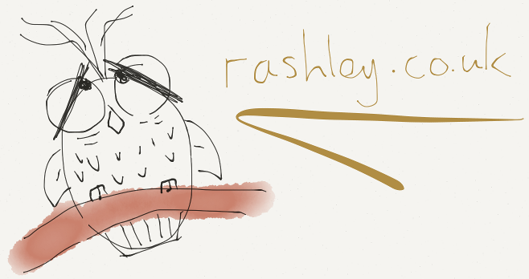

Canvas graphics experiments
Websockets
client
-
viewer
LIFX
JS controller
BBC News
Astro Conversions
Astronomy web cams
NOT weather page
Thai National Telescope
Concam at ING
SuperWASP North status
Astronomy scheduling
Observing checklist
ULTRACAM phase II [WHT/2015A]
ING Schedules
Local time
hh:mm:ss
Universal time
hh:mm:ss
Local Sidereal Time
hh:mm:ss
Julian Date
0.000
Location
(??, ??)